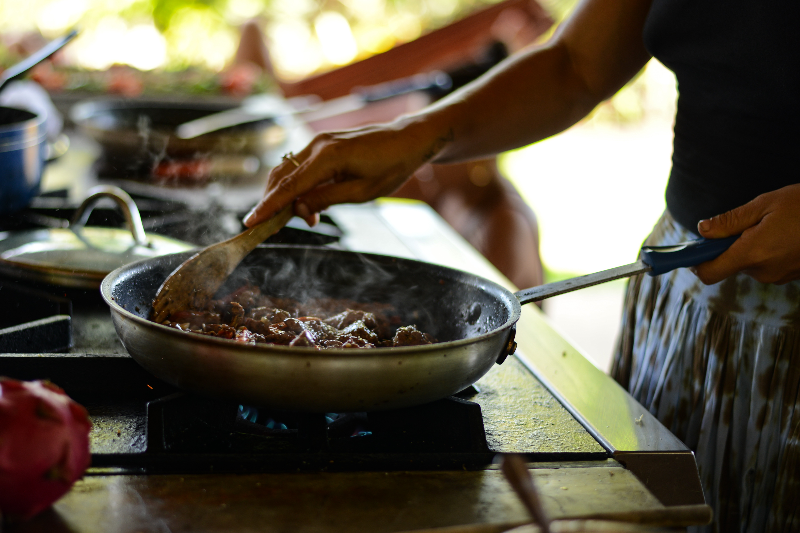
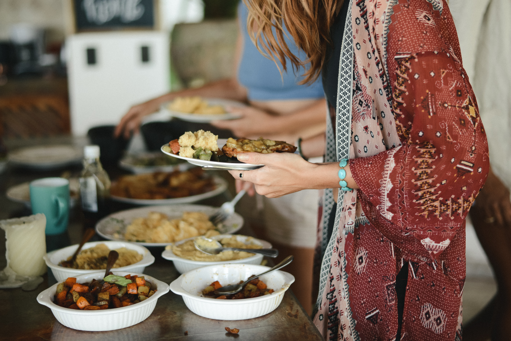
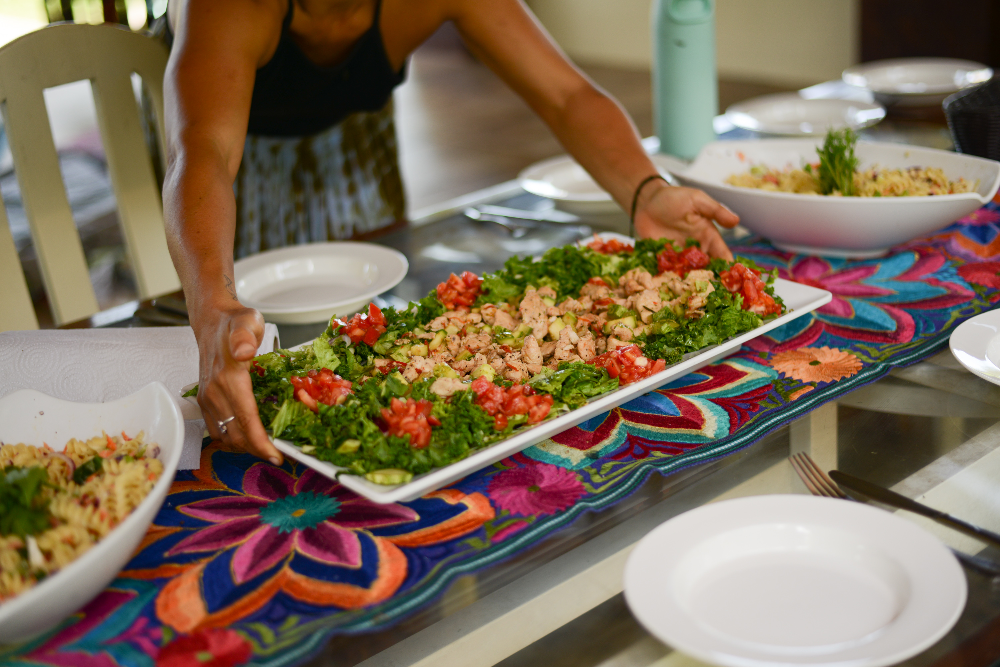

"Tengo hambre como si no hubiera comido."
Hambre real, no solo antojo. Esa sensación de pozo sin fondo que aparece justo cuando estabas tratando de "portarte bien".
Masterclass grabada
Una clase para entender por qué tu hambre, tus antojos, tu energía y tu relación con la comida no se sienten iguales todo el mes.
Para los días en que te sentís "floja", los días en que querés comerte la casa entera y los días en que contar calorías parece convertir tu cuerpo en un signo de pregunta.

Tal vez ya lo sentiste
Un día te sentís liviana, clara, casi sin hambre. Otros días aparece una urgencia rara: querés pasta, pan, pizza, chocolate, algo caliente, algo que abrace. Y junto con eso llega la culpa, como si tuvieras que poder sostener la misma dieta, el mismo déficit y la misma fuerza de voluntad todo el mes.
El dolor no es solo tener antojos. Es no saber si estás escuchando a tu cuerpo o saboteándote.
01
No desde la teoría. Desde la cocina, el cansancio, el antojo que parece no tener fondo y esa sensación de que nadie te explicó cómo alimentar un cuerpo cíclico.
Hambre real, no solo antojo. Esa sensación de pozo sin fondo que aparece justo cuando estabas tratando de "portarte bien".
Día 1: puedo con esto. Día 2: animal hambriento. Día 3: el daño ya está hecho. El ciclo se vuelve una montaña rusa de restricción y culpa.
Bajás calorías, entrenás más, comés "mejor"... y de pronto la regla se atrasa, el cuerpo se inflama o la energía desaparece.


02
Comer con tu ciclo no se trata de hacer todo perfecto. Se trata de empezar a reconocer patrones: cuándo necesitás más descanso, más proteína, más carbohidratos, más grasa, más suavidad, más estructura o simplemente menos juicio.
Porque en fase lútea muchas mujeres sienten más hambre, más antojos y más necesidad de energía. Y suelen interpretarlo como fracaso, cuando muchas veces es fisiología.
03
Un recorrido simple, práctico y sin juicio para dejar de improvisar con comida, hambre y energía. La sensación que buscamos es: esto tiene sentido, esto tiene lógica, no estoy loca.
El punto de partida: dejar de medir tu hambre con una regla lineal.
Una explicación clara para entender por qué algunos días sos calma y otros Cookie Monster.
Proteína, fibra, carbohidratos, grasas y comidas posibles para cada momento del ciclo.
Una manera más inteligente de responder a tu cuerpo sin caer en todo o nada.
04
Dale play y sentí el tono: ciencia explicada con ternura, comida real y una forma más honesta de mirar tus antojos.
05
Soy Flavia. Llevo años trabajando con mujeres y registrando mi propio ciclo. No llegué a este camino desde una fórmula perfecta, sino desde la experiencia de sentir mi cuerpo como un territorio desconocido y querer entenderlo sin pelearme con él.
Hoy traduzco lo que aprendí entre biología, alimentación, intuición y vida real para que más mujeres puedan dejar de vivir su ciclo como una interrupción y empezar a reconocerlo como una brújula.
- Flavia
06
Una sola decisión clara: acceder a la masterclass grabada y empezar a mirar tu hambre, tus antojos, tu energía y tus ganas de comer con más contexto.
Comer con tu ciclo
US$17
Probá la masterclass sin ningún riesgo. Si sentís que no es para vos, te devolvemos tu dinero. Sin preguntas.
El complemento del curso aparece dentro del checkout, no en esta página.